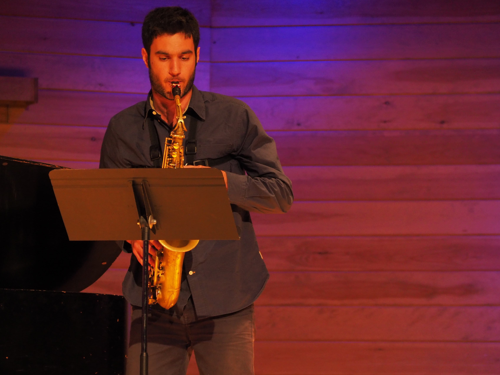

Agenda
13/7/24
World Premiere of 'f-axis' by Miles Warrington at the International Computer Music Conference, Hanyang University
7/5/24
Master's Graduation Recital at Bezanson Recital Hall, including 'De Profundis' by Simon Steen- Andersen
9/4/24
Performance of 'Landscape of Fear' by Marcos Balter with Jonathan Hulting-Cohen at the UMass Design Building
6/4/24
U.S. Premiere of 'Persephone' by Kostas Zisimopoulos at the Midwest Graduate Music Consortium, Voxman Recital Hall of the University of Iowa
23/2/24
Conducting the UMass Saxophone Ensemble at the 41st New England Saxophone Symposium
24/9/23
World Premiere Video Release of '5 Lyric Miniatures' by Giannis Koufoudakis, filmed at ConcertLab Utrecht
25/6/23, 9/7/23, 23/7/23, 6/8/23
Concerts with the Blue Lake Festival Band
23/4/23
Lecture-Recital at The Homespace: Mapping Spaces of Belonging conference at Brandeis University
15/4/23
Performance at the New England Saxophone Festival
31/3/23
Recording Presentation at the NASA Biennial Conference at the University of Southern Mississippi
21/3/23
Recital at Bezanson Recital Hall, including World Premiere of Roger Zare’s ‘The Last Question’
26/2/23
Concert with the UMass Saxophone Quartet at the Bandwidth Faculty Recital, Bezanson Recital Hall